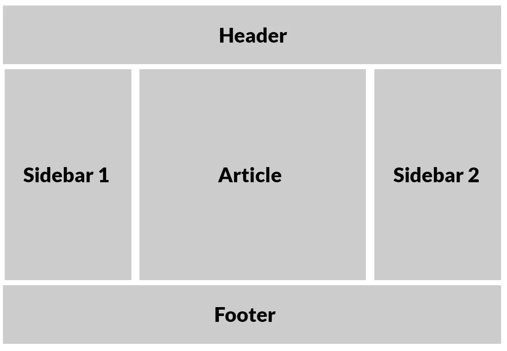

Design, který se přizpůsobuje různým zařízením – mobilům, tabletům, počítačům.
Zajišťuje přístupnost, lepší uživatelský zážitek a vyšší návštěvnost.
Stránka se správně zobrazuje na mobilu i počítači, prvky nejsou mimo obrazovku.
Jak rozeznat rozdíly v praxi? Zde je jednoduché porovnání:
| Vlastnost | Responzivní vzhled | Neresponzivní vzhled |
|---|---|---|
| Přizpůsobení obrazovce | Ano – na všech zařízeních | Ne – např. text mimo obrazovku |
| Čitelnost | Vždy čitelný text | Malý nebo přerušený text |
| Ovládací prvky | Dostatečně velké, snadno klikatelné | Příliš malé nebo moc blízko u sebe |
| Navigace | Přizpůsobená pro mobil i PC | Často pouze pro PC verzi |
<meta name="viewport" content="width=device-width, initial-scale=1.0">vw, vh – procenta šířky nebo výšky okna% – procenta relativní vůči rodičovskému prvkuem, rem – relativní velikosti písma/* If the screen size is 600px wide or less, hide the element */
@media only screen and (max-width: 600px) {
div.example {
display: none;
}
}